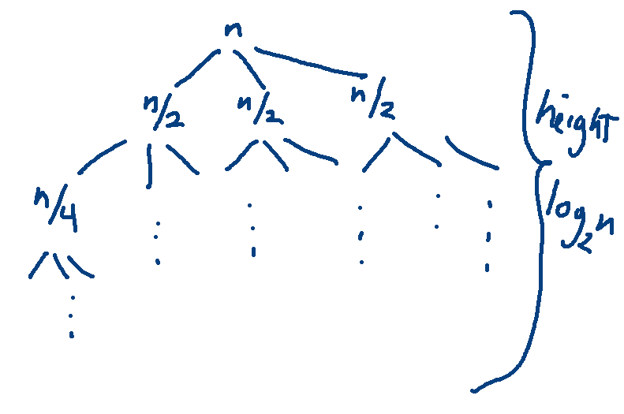
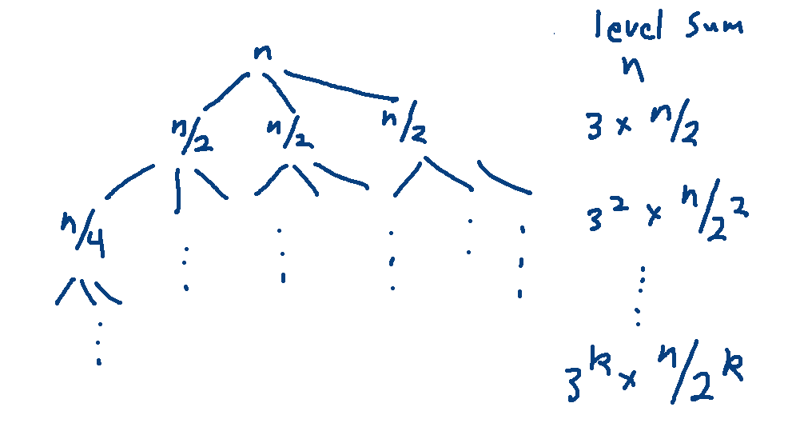

We're now going to do the running-time analysis for a less-obvious algorithm, desiged by Anatolii Karatsuba in the 1960's (though some of the supporting math goes back even earlier). This is to give you a flavor of the examples that you'll encounter in later theory courses. It will also give us a well-motivated example of dividing a problem into k subproblems, where the size of the subproblems isn't n/k.
When you want to multiply reasonably-sized integers on a computer, you just feed them to the computer's ALU and the result appears by magic. But what if you need to multiply very large integers, e.g. for a cryptographic application? Then we need an explicit software algorithm to multiply them. This kind of algorithm is also used to design the multiplication algorithms built into the ALU.
For this sort of algorithm, the "size" of a number is the number of digits needed to represent it.
Suppose that we have two positive integers x and y. Each number is a sequence of digits. Suppose that we're working in base 10 and each number has 2m digits. We can divide them in half this way:
\(x = x_1 10^m + x_0\)
\(y = y_1 10^m + y_0\)
The first half of x, \(x_1\) contains the first m digits. The second half \(x_0\) contains the other m digits.
Inside a computer, integers are represented in binary (base-2). In that case, we use 2 in place of 10, like this:
\(x = x_1 2^m + x_0\)
\(y = y_1 2^m + y_0\)
Suppose that we multiply these polynomials in the obvious way: \(xy = (x_1 2^m + x_0)(y_1 2^m + y_0)\). Then we would get the equation:
\(xy = (x_1y_1)2^{2m} + (x_0y_1 + x_1y_0)2^m + (x_0y_0)\)
I can rewrite this more clearly like this:
\(xy = A2^{2m} + B2^m + C\)
where
\(A = x_1y_1\)
\(B = x_0y_1 + x_1y_0\)
\(C = x_0y_0\)
Adding two numbers requires time linear in number of digits. Just add them the way you did in grade school, moving from right to left with a carry value.
Less obviously, the multiplications by \(2^{2m}\) and \(2^m\) can also be done in linear time. Consider how you multiply by 10 or 10,000 in base-10: you add zeroes at the end. We're doing the same thing in base-2. So we push the bits sideways and fill in the space with zeroes. Since these "shifts" are much faster than normal multiplication, we're not going to count them in our total of multiplications.
So everything in this method is linear except for the recursive calls to do the multiplication. We need four multiplications to compute A, B, and C. And each of the numbers \(x_0\), \(x_1\), \(y_0\), \(y_1\) is half the size (in digits) of x or y. So our running time formula is
\(T(1) = c\)
\(T(n) = 4T(n/2) + O(n)\)
The base case \(T(1) = c\) assumes that we only know how to directly multiply very very small numbers. This is to keep the rest of our analysis simple. In a real implementation, you'd probably switch over to specially designed base-case code somewhat earlier. For a software implementation of big-integer multiplication, the base case size would be the largest that the ALU can handle.
If you build a recursion tree, you'll find that the closed form for T(n) is \(O(n^2)\). This isn't a bad running time. But a multiplication function will be called a LOT. So it's worth optimizing it as much as possible.
The equations for the naive algorithm looked like this:
\(xy = A2^{2m} + B2^m + C\)
where
\(A = x_1y_1\)
\(B = x_0y_1 + x_1y_0\)
\(C = x_0y_0\)
For Karatsuba's algorithm, we rewrite our algebra for computing B:
\(B = (x_1 + x_0)(y_1 + y_0) - A - C\)
(Take a minute and multiply out this product to see why computes \(x_0y_1 + x_1y_0\).)
So our equations now look like this:
\(xy = A2^{2m} + B2^m + C\)
where
\(A = x_1y_1\)
\(C = x_0y_0\)
\(B = (x_1 + x_0)(y_1 + y_0) - A - C\)
We have more additions and subtractions, but only three multiplications. So our recursive running time function looks like this:
\(T(1) = c\)
\(T(n) = 3T(n/2) + O(n)\)
We'll see in a sec that the closed form for this is \(O(n^{\log_2 3})\) which is approximately \(O(n^{1.585})\).
To appreciate the difference, suppose that \(m=2^{10} = 1024\). Then the naive algorithm requires \((2^{10})^2 = 1,048,576\) multiplications, whereas Katatsuba's method requires about \((2^{10})^{1.585} \approx (2^{1.585})^{10} \approx 3^{10} = 59,049\) multiplications. That's a factor of 18 better.
Let's use a recursion tree to figure out where I got that closed form. The tree has 3-way branching and the problem size is reduced by a factor of 2 at each level. So it looks like this:

The height is determined by the reduction in problem size, so it's \(log_2 n\). The number of leaves is the branching factor (3) to the power of the height. So there are \(3^{\log_2 n}\) leaves. Using the change of base formula gives us
\(3^{\log_2 n } = 3^{\log_3 n \cdot \log_2 3} = n^{\log_2 3}\) leaves
Each leaf contains constant work (c). So the work at the leaves is \(cn^{\log_2 3}\). But we can ignore constant multipliers because we only care about the big-O answer.
Now let's look at the internal levels. The kth level of the tree contains \(3^k\) nodes, each containing \(n\frac{1}{2^k}\) work. So each level contains \(n(\frac{3}{2})^k\) work.

The internal levels run from \(k=0\) to \(k=\log_2 n -1\). So the work at all internal levels is:
\(\sum_{k=0}^{\log_2 n -1} n(\frac{3}{2})^k \ \ = \ \ n \sum_{k=0}^{\log_2 n -1} (\frac{3}{2})^k\)
Remember the general formula for the closed form of a geometric series: \(\sum_{k=0}^{n-1} r^k = \frac{r^n -1}{r -1}\). In this case \(r = \frac{3}{2}\).
\(\sum_{k=0}^{\log_2 n -1} n(\frac{3}{2})^k \ \ = \ \ n \sum_{k=0}^{\log_2 n -1} (\frac{3}{2})^k \ \ = n((\frac{3}{2})^{\log_2 n} - 1)(\frac{1}{3/2 - 1}) \)
Ignoring the constant multiplier \((\frac{1}{3/2 - 1})\) gives us \(n((\frac{3}{2})^{\log_2 n} - 1)\). The dominant term of this is \(n(\frac{3}{2})^{\log_2 n}\).
Let's simplify this.
\(n(\frac{3}{2})^{\log_2 n}\ \ =\ \ n(\frac{3^{\log_2 n}}{2^{\log_2 n}}) \ \ =\ \ n(\frac{3^{\log_2 n}}{n}) \ \ =\ \ 3^{\log_2 n}\).
We just saw that \(3^{\log_2 n}\) is equal to \(n^{\log_2 3}\).
So the work at the leaf level and the sum of the non-leaf levels are both \(O(n^{\log_2 3})\).
When you have have to analyze this sort of divide and conquer algorithm frequently (e.g. in later algorithms courses), there is a summary of the possibilities called "The Master Theorem". Look it up if you are curious. It's complex enough that it's not worth trying to memorize for this class.